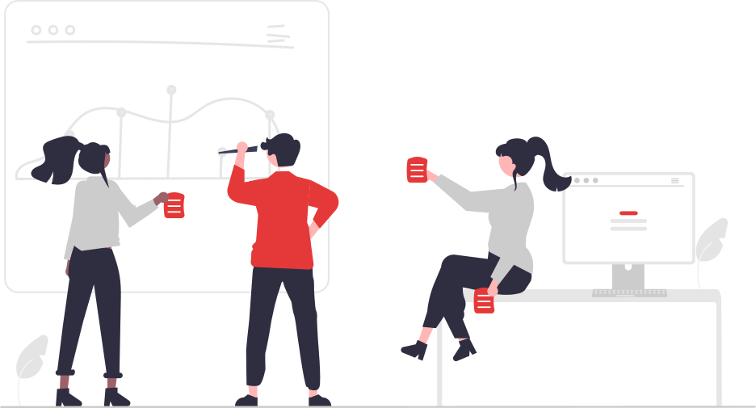

Quem sou?
Me chamo Adilson Neubaner tenho 19 anos. Sou um estudante de desenvolvimento front-end em constante evolução, atualmente tenho domínio sobre as tecnologias: HTML, CSS, JavaScript, Bootstrap e React.
Ao criar meus projetos tenho em mente sempre manter o comprometimento em criar soluções criativas e eficientes.
Gostos Pessoais
A música está muito presente na minha vida, seja quando estou programando, tomando banho, ou trabalhando. Escuto de tudo praticamente, na minha playlist você vai encontrar desde de Ice Cube, Metallica, Leandro e Leonardo e até Twice. Mas o que mais gosto de ouvir com certeza são músicas dos anos 80 e 90. Sou apaixonado por violão e guitarra, dou umas arranhadas no violão mas quero um dia também aprender a tocar guitarra, só para tocar aquela perfeição que é o solo de November Rain.
Sou apaixonado por tecnologia, mas não apenas programação. Gosto muito de computadores, montar, acompanhar lançamentos de novos hardwares, consumir esse tipo de conteúdo na internet, ficar de olho nos grupos de promoções mesmo não tendo dinheiro para comprar 🥹. Aliás quem quiser me dar uma RTX 4090 eu estou aceitando.
O universo me fascina, seus mistérios me intrigam e sua imensidão me assusta. Minha curiosidade me faz perder algum tempo de vez enquando, pensando em coisas sobre o nosso universo, como, para onde vai a matéria que um buraco negro absolve? Estamos sozinhos realmente ou todos estão se escondendo de nós? Porque o universo está se expandindo? São tantas perguntas que o melhor é deixar de lado e focar no VS Code.
Apesar de tudo que descrevi que gosto anteriormente, o que mais amo definitivamente é estar com o meu amor. Amo ver o seu sorriso lindo. Amo escutar ela reclamar das minhas músicas dizendo que são de velho(sei que ela faz de propósito). Quando estou frustado por conta de algo errado nos estudos ela sempre está comigo, para me dar um abraço quentinho e dizer que está tudo bem e que amanhã é um novo dia e vou conseguir porque ela me acha incrível. Eu amo tanto essa mulher, é nela que penso quando acho que não vou conseguir, ela me dá força para ser melhor todos os dias.
Motivações
Fazer parte da comunidade Código Certo é uma oportunidade de trabalhar com projetos reais enfrentando problemas reais que teremos ao entrar no mercado de trabalho, e isso tudo trabalhando em equipe, o que faz essa experiência ser ainda mais enriquecedora. Quero muito fazer parte de uma equipe Código Certo, creio que irei aprender muito e quem sabe até ensinar.
